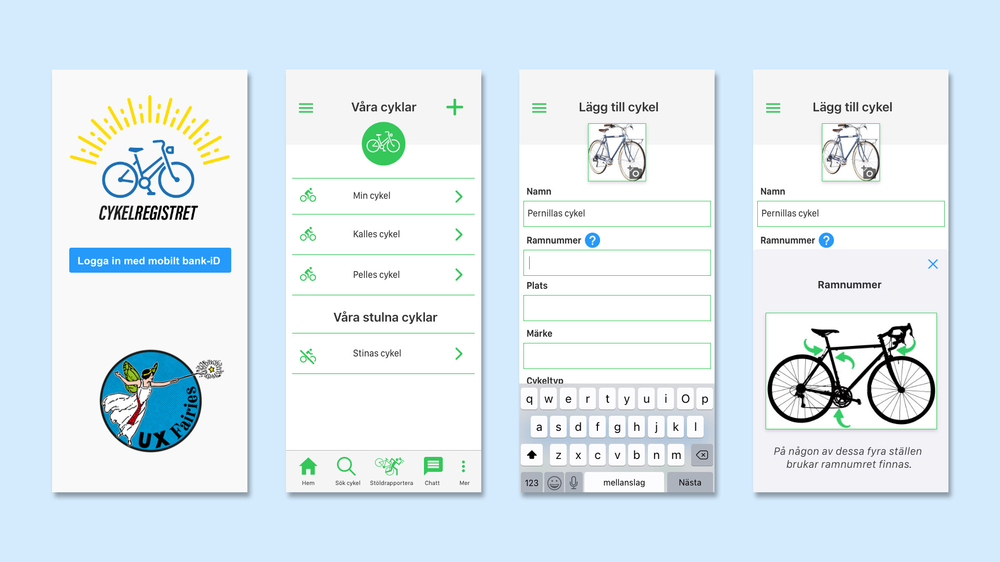
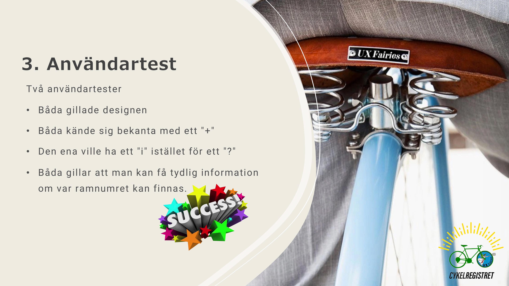

UX
CYKELREGISTRET
Skolprojekt (grupparbete) UX Design , kursen "Verktyg för prototypproduktion", EC Utbildning 2020.
Uppgift: gör en ny iteration på ert valda problem (Ex. testa från en ny vinkel, eller gå in på ett annan del problemet). För detta problem:
- Testa ett par rundor av tänkarhattarna med målet att bygga upp nya idéer eller att bekräfta tidigare idéer.
- Sen ska ni skapa en hi-fi prototyp som är minst 3 sidor djup, med alla detaljer som bör vara där för att skapa ett användartest så nära ni kan för ett riktigt scenario a. Ni kan välja vilket program ni än vill, men det är hela gruppens val. b. Planera hur ni ska samarbeta för att få fram prototypen.
- Kör minst 2 användartest på personer från er målgrupp a. Samma personer som ni kört med innan är ok. b. Glöm inte att köra med en testledare och en noterare.
- Producera en SWOT analys som sammanställer ert problem. a. använd resultaten från hattarna och testerna här.


I version 2 av appen fokuserade vi på den efterfrågade funktionen att hitta ramnumret på en cykel. Prototypen gjordes av mig i Adobe Xd.

Från powerpointpresentationen av version 2 av appen.
And lastly, this one. Checkmate.
Donec ullamcorper nulla non metus auctor fringilla. Vestibulum id ligula porta felis euismod semper. Praesent commodo cursus magna, vel scelerisque nisl consectetur. Fusce dapibus, tellus ac cursus commodo.